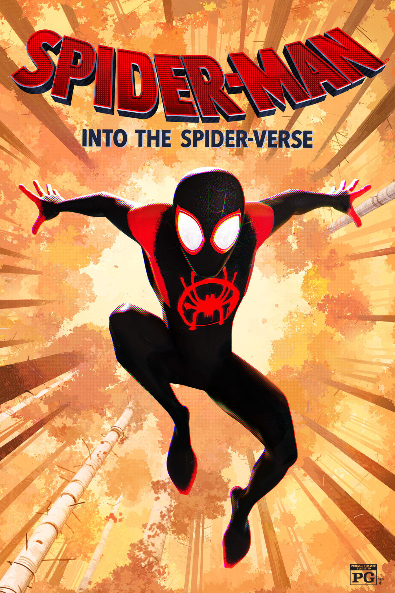

The Movies

This movie was directed by Peter Ramsey, Bob Persichetti, Rodney Rothman and was released to the public on 2018. The company that produced this movie was Sony pictures.

Bitten by a radioactive spider in the subway, Brooklyn teenager Miles Morales suddenly develops mysterious powers that transform him into the one and only Spider-Man. When he meets Peter Parker, he soon realizes that there are many others who share his special, high-flying talents. Miles must now use his newfound skills to battle the evil Kingpin, a hulking madman who can open portals to other universes and pull different versions of Spider-Man into our world. words to click
This movie was directed by Joaquim Dos Santos, Kemp Powers, Justin K. Thompson and was released to the public on 2023. The company that produced this movie was Sony pictures.
In this movie miles morales follows gwen into a world where spidermans from all dimensions resides, he was also introduced to canon event and tried to escape inorder to save his father. While trying to save his father, mile morales also have to be aware of an multidimensional threat villain name spot, at the end of the movie, gwen had to make a decision on whether or not to save miles morales on whats right or to follow the classic canon event procedure and let miles see his father die for him.